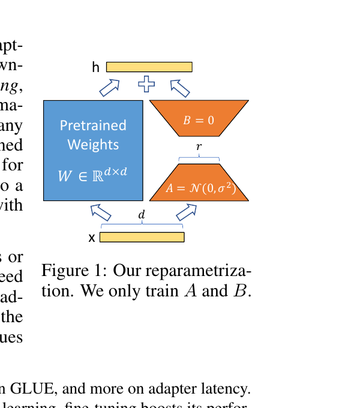

One-hour paper lesson
LoRA: low-rank adaptation
A pretrained model may have billions of parameters, yet a new task may only need a small number of directions in which to change it. LoRA turns that hunch into a compact, mergeable update.
01 · The promise
One foundation model; many small task deltas.
Fine-tuning gives every downstream task its own revised copy of a pretrained model. At GPT-3 scale, that means storing and training another enormous parameter set per task. Hu et al. ask a more surgical question: must the task-specific change itself have the same dimensionality as the original weight matrix?
LoRA freezes the base model and learns a low-rank update beside selected dense matrices. The practical payoff is not merely fewer trainable numbers: each task can carry a small “delta” while sharing one base model, and the delta can be folded into the weight matrix for ordinary inference.
02 · A bridge from fine-tuning
Think of a map correction, not a replacement map.
A pretrained matrix is like a large, detailed map. A task such as SQL generation need not redraw every road. It may need a coordinated correction: emphasize a few routes, suppress a few detours. Full fine-tuning permits a separate correction at every square of the map. LoRA says the useful correction may lie in a thin set of coordinated directions.
Keep the distinction clean.
LoRA does not make the base model low-rank. The frozen matrix remains full-sized. It constrains only the task-specific update ΔW to be low-rank.
03 · Actors, shapes, and the new contract
Factor the update into a narrow middle.
For a pretrained dense weight matrix W0 with output dimension d and input dimension k, LoRA replaces “learn every entry of ΔW” with two thin matrices. The rank r is deliberately much smaller than either side.
frozen pretrained matrix
input activation
trainable expansion
trainable compression
the rank budget: number of learned intermediate directions
paper’s optional scaling of the update
The base path and update path see the same x; their output vectors are added coordinate by coordinate. In the paper’s initialization, A is Gaussian-random and B starts at zero, so BA begins as the zero update. The pretrained behavior is intact at the first step.

04 · The mechanism
Pass through r learned directions, then return to the full output space.
05 · Worked trace A
Count what the factorization buys.
Suppose a square projection is 1,024 × 1,024. Full fine-tuning permits 1,024² = 1,048,576 update entries. With r = 8, LoRA learns a 1,024 × 8 matrix and an 8 × 1,024 matrix: 16,384 entries. That is 64 times fewer trainable entries for this matrix.
Do the shape check
If W0 is d × k and x has k entries, what is the shape of BAx?
06 · Worked trace B
Compute a tiny update, then merge it.
Let W0 = [[2, 0], [0, 1]], A = [1, −1], and B = [[3], [2]]. Here r = 1. The low-rank change is an outer product:
The deployed matrix becomes [[5, −3], [2, −1]]. For input x = [1, 2], the original path yields [2, 2]; the update yields [−3, −2]; together the adapted output is [−1, 0]. The point is not the toy values. It is that a rank-one update makes every entry change in a coordinated outer-product pattern—not independently.
For a 1,024 × 1,024 projection, rank 2 learns 4,096 entries: 256× fewer than a full update.
Static reading: lowering r reduces the number of independent intermediate directions and the number of stored trainable entries. It can also remove task-relevant directions.
07 · Predict before you reveal
Does low rank imply a weaker deployed layer?
After training, LoRA replaces a selected layer with W0 + BA. Is its inference computation inherently two matrix multiplies slower than the original layer?
08 · Evidence
Small deltas can remain competitive—but the evidence is scoped.
On GLUE, the paper compares LoRA with full fine-tuning across pretrained encoders. This source-faithful reconstruction isolates the headline rows from Table 2. The averages combine different task metrics, as the paper specifies; use them as a compact benchmark summary rather than a universal score.
| Model & method | Trainable parameters | GLUE average |
|---|---|---|
| RoBERTa base, full fine-tuning | 125.0M | 86.4 |
| RoBERTa base, LoRA | 0.3M | 87.2 |
| RoBERTa large, full fine-tuning | 355.0M | 88.9 |
| RoBERTa large, LoRA | 0.8M | 89.0 |
| DeBERTa XXL, full fine-tuning | 1,500.0M | 91.1 |
| DeBERTa XXL, LoRA | 4.7M | 91.3 |
The paper also tests a fixed 18M-parameter budget on GPT-3. Splitting it across query and value projections (Wq, Wv) at rank 4 gives 73.7% WikiSQL and 91.3% MultiNLI validation accuracy; spending it only on Wq at rank 8 gives 70.4% and 91.0%. A small rank budget is therefore also an allocation decision: where the adaptation is placed matters.
| Adapted weights | Rank | WikiSQL | MultiNLI |
|---|---|---|---|
| Wq | 8 | 70.4 | 91.0 |
| Wq, Wv | 4 | 73.7 | 91.3 |
| Wq, Wk, Wv, Wo | 2 | 73.7 | 91.7 |
09 · Diagnostics and limits
Low rank is a hypothesis about the task, not a law of models.
Common mistaken inference: “If rank 1 or 4 works here, it will work everywhere.”
The authors explicitly warn against that conclusion. A task far from the pretraining setting—for example, a different language in their thought experiment—could benefit from an update as expressive as full fine-tuning. They also focus their experiments on attention weights; adapting MLP, LayerNorm, and bias parameters was left for future work.
There is an operational trade-off too. Merging is excellent when a batch uses one task adapter. If one batch mixes tasks, selecting different merged matrices per example is not straightforward; keeping adapters unmerged makes dynamic selection possible when latency is less critical.
10 · Active recall
Close the loop.
What is frozen and what is learned in a LoRA layer?
The pretrained matrix W0 is frozen. The low-rank factors A and B are trained, defining ΔW = BA.
Why does rank r reduce parameter count?
Instead of d × k independent update entries, LoRA stores d × r plus r × k entries. When r is far smaller than d and k, this is much smaller.
Why can LoRA avoid added inference latency for one task?
Before deployment, form W = W0 + BA. The result has the original matrix shape and can be used in the ordinary layer computation.
What does the fixed-budget result teach beyond “LoRA works”?
It shows that allocation matters: spreading a limited parameter budget across useful projection types can outperform putting all of it into one type at higher rank.
11 · Connect it to your mental map
Adaptation is a third choice beside architecture and objective.
BERT taught the familiar pattern: pretrain a Transformer, then fine-tune it for a task. DPO changed the objective used to adapt a language model. LoRA changes the parameterization of the update: it asks the optimizer to move through a small, learned subspace instead of granting it an independent lever for every weight. The Transformer still computes attention; Adam can still optimize the trainable factors; the new idea is where the task-specific degrees of freedom live.
12 · Takeaway
Store the change, not a whole new model.
LoRA is the bet that adaptation often needs a low-dimensional, coordinated correction to a high-dimensional pretrained model. Factor that correction as BA, train only the factors, and merge it into the base weights when a single task is deployed. It is powerful precisely because it is a constrained hypothesis—one that must be checked against the task, the selected layers, and the rank budget.